What we did, in one line
Bought a single family nobody wanted. Put the money into the part of it nobody wanted, the lower level, and turned one house into two units. A tenant has covered most of the mortgage every month since March 2019.
That’s the whole trick. The rest of this is how long it took and what it cost.
Main floor · one camera position
The same shot, four times.
Shooting is the one part I never second-guessed. Same spot, same frame, every time I came by. I think I did it eight times. I can only find four.
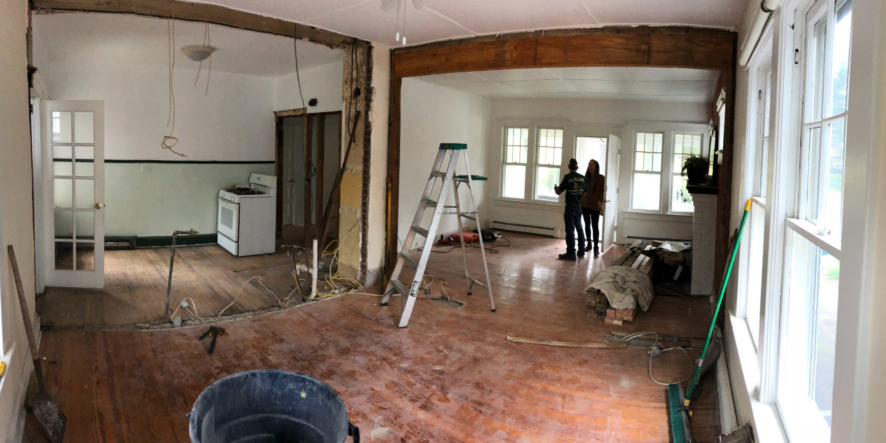
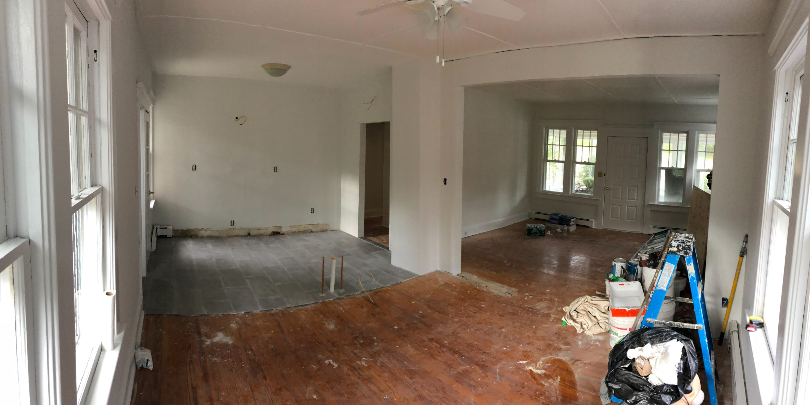
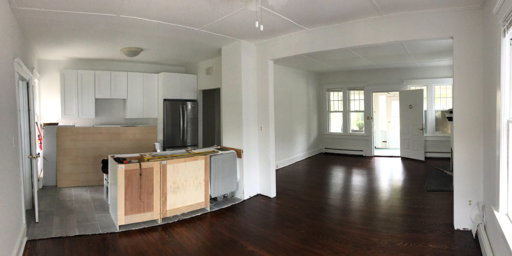
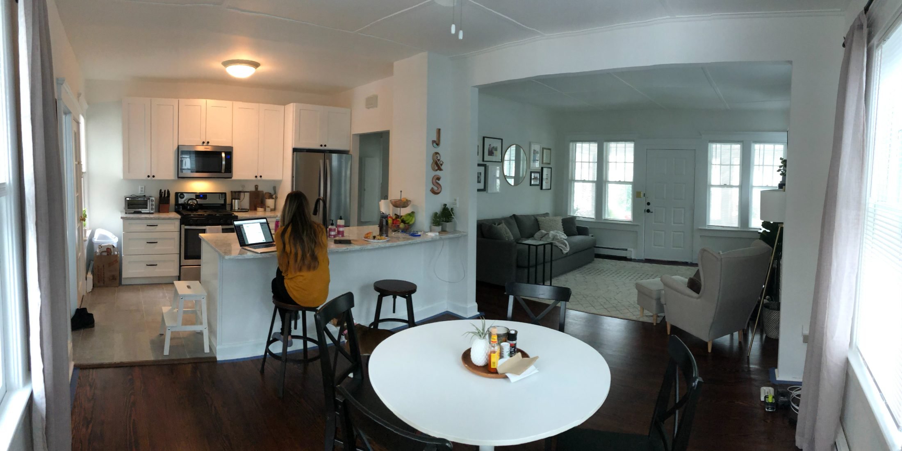
01SEC The 500 square feet
Before any of it there was an apartment in Randolph. Five hundred square feet. We were in it three years.
We ran an envelope system. Actual cash, split by category, and when an envelope was empty we were done until the next month. It’s a dumb way to run a household and it’s the only reason any of the rest of this happened. Every dollar of debt got paid off with wedding money. I shot and cut weddings, and it went at the debt instead of at a lifestyle.
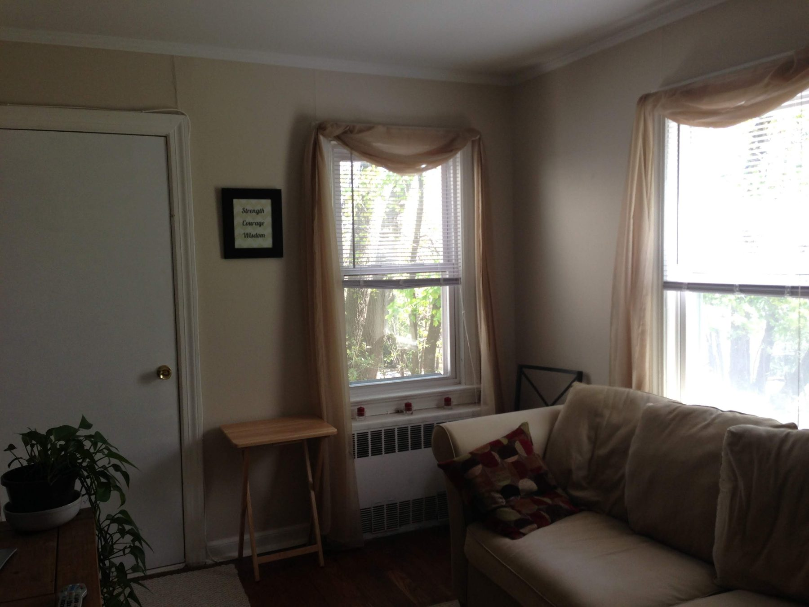
People hear “we bought a house” and picture a decision. It was three years of saying no to small things, and then one day there was enough for a down payment.
It didn’t buy this house. In July 2017 it bought a duplex on Stiles Ave in Morris Plains. Two doors, one mortgage, and the first time somebody else’s rent showed up in our account. Western Ave came fifteen months later, and only because the first one was already working. That’s the part people skip.
02SEC The listing that sat
Steph found it. A single family on Western Ave in Morristown, built in 1928. It’s two units now. That part was ours.
It had failed to sell once already. Listed July 2016 at $425,000, under contract that August, pulled by the end of the month. Whatever that deal was, it fell apart. It came back in July 2018 asking $369,000 — fifty-six thousand less than it wanted two years before. That’s the whole reason we could afford it.
We walked it on 12 September. Thirty seconds of that tape is below. You can hear the agent telling me what to ignore.
At 03:03 he says: “Okay, go ahead, you can probably kill that dishwasher.” That was the energy of the whole showing. We closed three weeks later, 2 October 2018, at $354,000.
Everyone else saw a house that needed everything. Steph saw rooms — which walls were doing nothing, where the light would land once the terracotta was gone, and a basement that didn’t have to be a basement. She sees what a room could be. I price it.
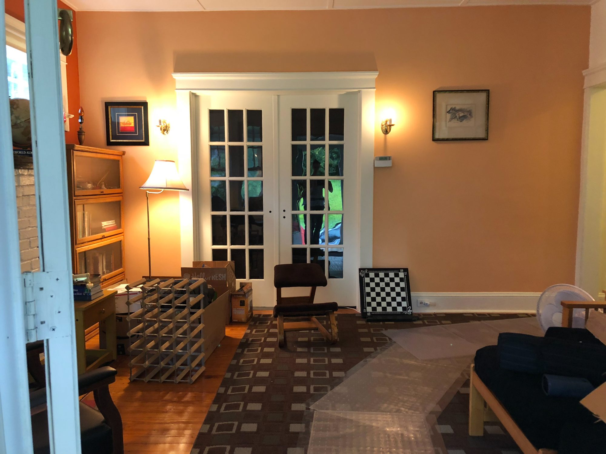
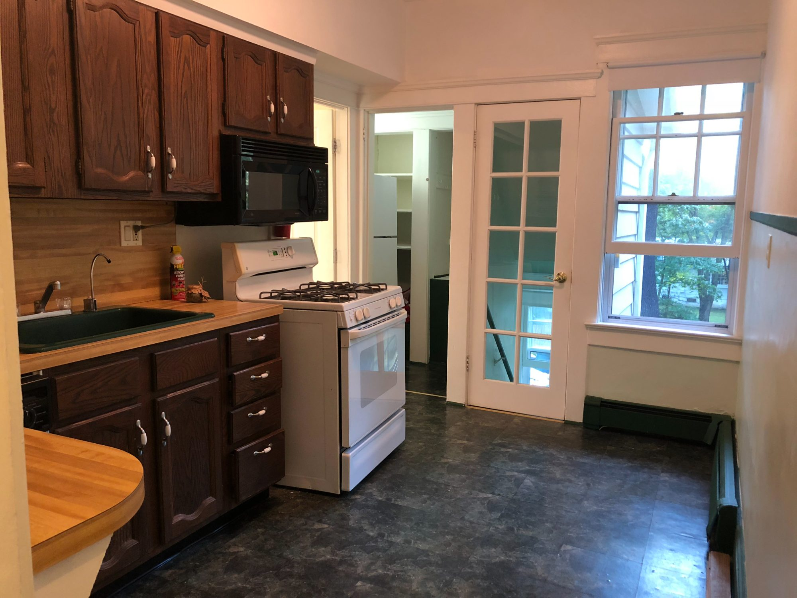
Tonehomes · Morris County
Standing in a house right now trying to work out whether the lower level is worth anything? Send me the listing. I’ve made this exact decision with my own money and I’ll tell you what I see.
Text me the listing →609 · 902 · 0299 · my actual phone
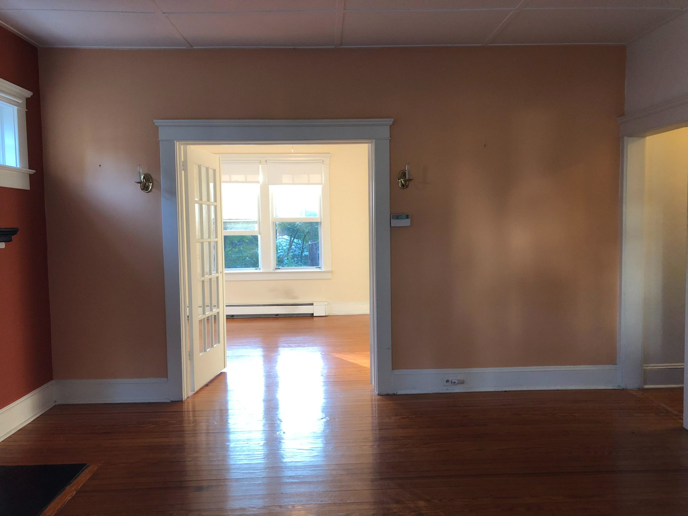
03SEC Four sheets of paper
We taped four plans to the wall. Demo. Construction. Kitchen. Finish. One sheet each, in that order, and nothing started until the sheet before it was done being argued about.
We couldn’t afford to make mistakes in drywall, so we made them on paper. Moved a wall four times on a printout. Put the kitchen sink in three different places. None of it cost anything.
They’re not architect’s drawings — printouts in sheet protectors, marked up in pen. Red for what comes out, blue for what stays. Steph drew them. She’s an interior designer by trade, years of it at Gensler in Morristown, drawing rooms for other people. This one was ours.
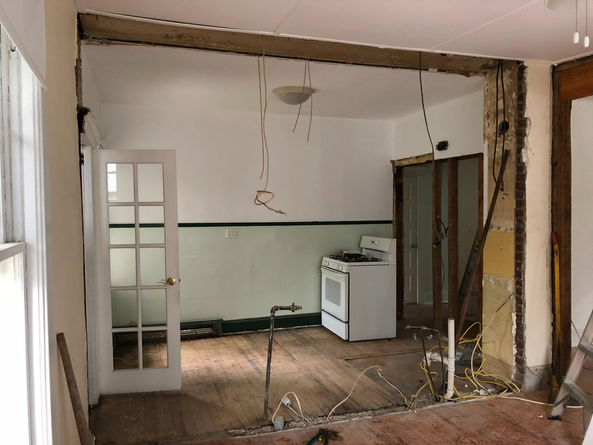
Steph ran baseboard. On 21 October she learned the miter saw, which mostly meant learning that 45 and 22 are the only two numbers that matter, and that you mark the other side before you cut.
It was easier. It usually is, the way she does it.
04SEC The lower level
Two months, three takes. I didn’t plan on documenting it. I kept opening the camera because the room kept not looking like it did the last time.
STEPH: I love the light switch location.
JUSTIN: I know, I just, I felt like, let’s switch it up totally and just kind of let it hang here.
Steph is behind the camera. She usually is.
Lower level · three takes · Jan–Mar 2019
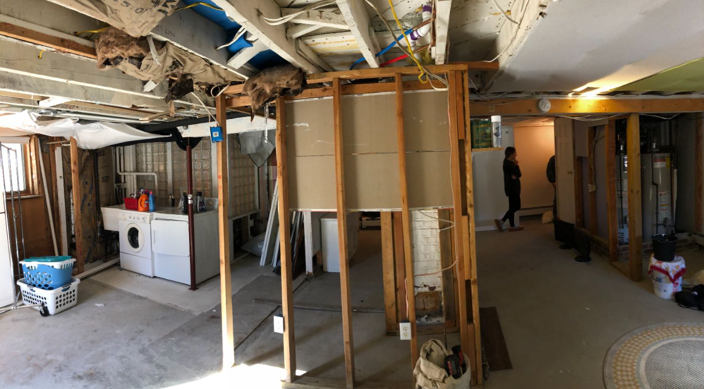
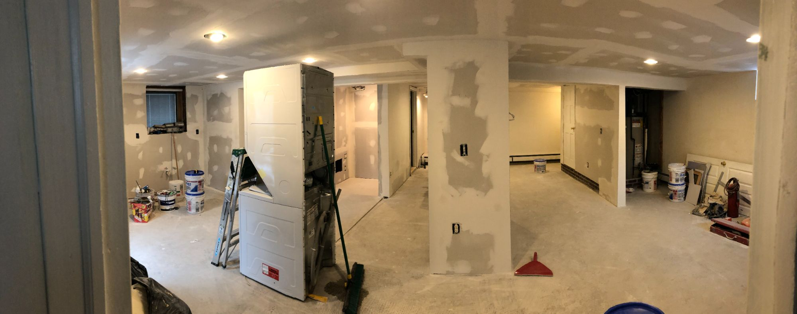
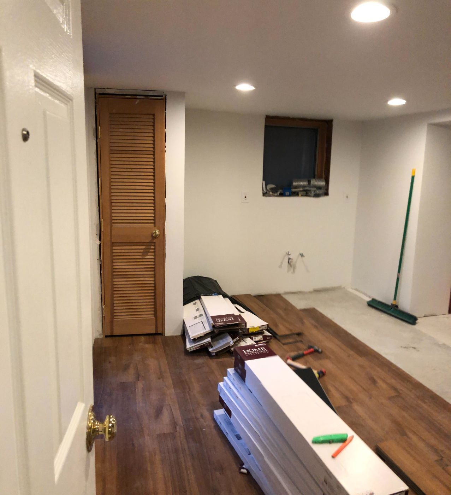
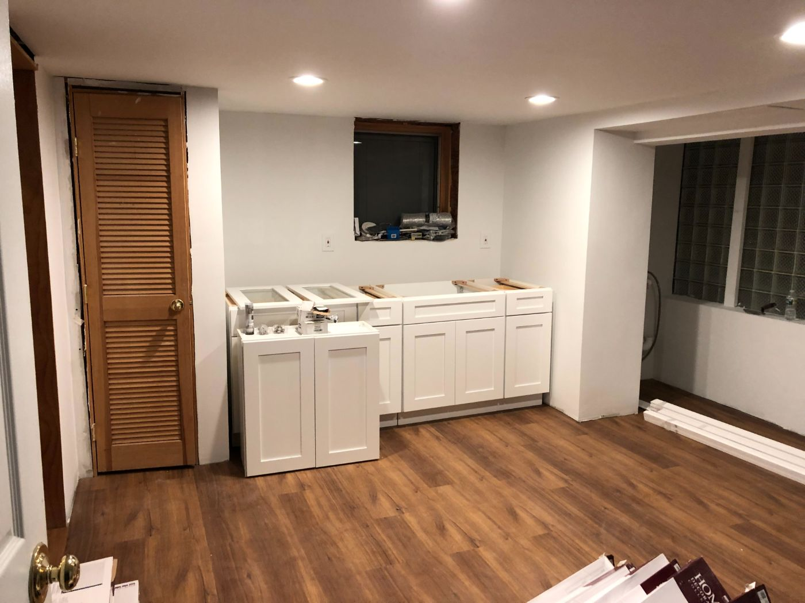
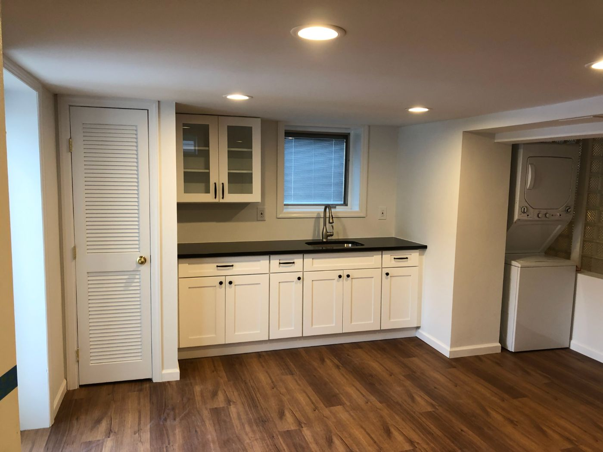
Between the first take and the last: Dominic, two months, and a schedule we didn’t control. On 7 January I woke up without a corporate job for the first time. That’s a different story.
“Steph had the vision of actually transforming it into this beautiful studio apartment space.”
8 March 2019 · IMG_4679 · 01:15
By March it was our third rental unit. On the tape I say “We’re tired. We’re ready for the renovations to be over,” and thirty seconds later, “It was a lot of work, but hey, we’re here.” Both true.
the Western Ave house · the sheet
- Asking, July 2016
- $425,000
- Asking, July 2018
- $369,000
- Purchase price · 2 Oct 2018
- $354,000
- Renovation · upstairs
- $30,000
- Renovation · lower level
- $15,000
- All-in
- $399,000
- Value today
- $600,000
- Rent · upstairs · 2019
- $2,650 / mo
- Rent · upstairs · today
- $3,000 / mo
- Rent · studio
- $1,850 / mo
- Gross rent
- $4,850 / mo
- Mortgage
- $1,950 / mo
- Cashflow · today
- $2,900 / mo
The prices and dates are public record. Value today is my own estimate, so take it for what it is. The only line on this sheet I actually run anything on is the last one.
Some of that gap is the work. Some of it is Morris County between 2018 and now. Both are true.
Rents have moved since 2019, so the cashflow line has grown with them. Upstairs has turned over five times. The studio has had the same tenant since the day it opened.
- Project
- Western Ave
- Sheet
- L-01
- Closed
- 2 Oct 2018
- Drawn by
- J.H. / S.H.
05SEC We never slept there
People assume we lived in it while we worked on it. We didn’t — we were still at Stiles Ave, driving over most nights after work. If you can avoid living in the work, avoid living in the work.
And I want to be straight about who built this, because the internet is full of people implying they swung every hammer. Dominic did it. Ninety percent of the work in these videos is his. We did demo, some painting, the quarter round, and an unreasonable number of runs to Home Depot.
Two months on a contractor’s calendar isn’t two months on yours. A 7am text that the material didn’t come in, four days where nothing happens, then a Tuesday where the whole room changes. You just keep showing up.
It was also fun, which nobody believes about a renovation. First thing where Steph made every call — layout, light, finishes, all hers.
06SEC What it actually bought us
Not the house. The decision.
The studio meant a tenant covered nearly all of the mortgage from the day we finished it. That changed what a bad month could do to us, and it cost $15,000 and two months.
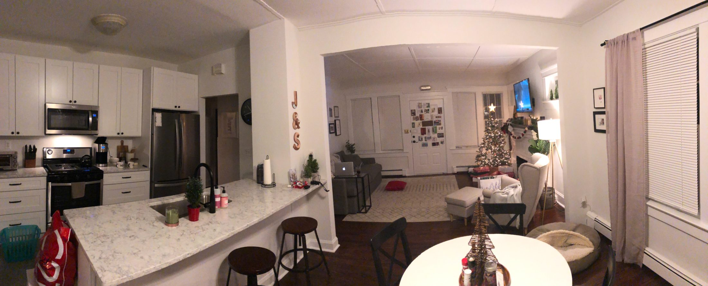
Here’s what I didn’t expect. Upstairs, the big unit, the real apartment with the kitchen we fought over, has had five tenants in six years. Every turnover is a vacancy and a paint job and a month of showings. It started at $2,650 and it’s $3,000 now, and getting there cost us five moves.
The studio has had one tenant. She moved in the day after we finished it and she’s still there. Never late, takes care of the place, and in six years I’ve spent maybe an afternoon on that unit.
So the cheap half of the budget, $15,000 against $30,000, the room we almost didn’t build, is the half that has given us no trouble at all. If you’re running numbers on a second unit, run them on turnover too. A small place somebody can comfortably afford keeps them longer than a nice one they’re stretching for.
What compounded after was not the equity. It was that we had done it once, badly, with our own money, and we knew which parts of it were theater.
“It’s the hardest project we’ve taken on. It’s also the only one I’d do again tomorrow.”
Justin · Western Ave
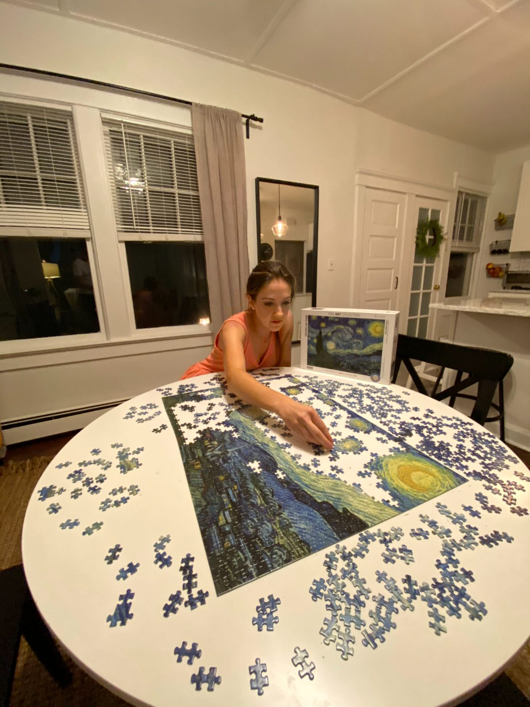
07SEC What we’d tell you
If you’re looking at a house in Morris County with space nobody is using, a lower level or an attic or a garage, these are the things we’d think about first.
Look at the space, not the listing. Ceiling height, a way in and out, heat, and where a bathroom could go. Those four decide whether the room is worth anything. Nobody photographs them.
Price the fixer at the boring stuff. Ours ran $30,000 upstairs and $15,000 down, and the parts that cost most are the parts nobody sees. Assume the invisible work is the budget and treat the kitchen as the reward.
Finance the appliances, not the renovation. Every appliance in both units went on a Home Depot card at twenty-four months, no interest, paid off before the promo ended. It’s the one piece of debt in this story I’d do again without thinking.
Know who is designing it. Not the contractor. Somebody has to hold the finished room in their head for two months, and if that person isn’t in the house every week you pay for it. For us that was Steph.
When to walk. My rule was one percent: the place has to rent for one percent of the purchase price every month. Western Ave cost $354,000, so it had to clear $3,540. It does $4,850. That’s the only reason I bought it. One percent isn’t reasonable in Morris County anymore, and anybody still quoting it either bought in 2018 or hasn’t bought anything — but the habit underneath survives. Run the number before you fall in love with the kitchen.
The other line is structure. I’ll take on cosmetic work all day, but the bones have to be sound. Cosmetic work has a budget. Structural work has a hole in the middle of it, and I’ve never heard anybody say the hole was smaller than they thought.

Stiles again, the one that started it. Same shape as everything since: two doors on one mortgage. Duplex, lower level, room over a garage — what matters is whether the second space is somewhere a person would actually want to live.
This isn’t a formula. We did it once, on one street, and got some of it wrong. But we did it with our own money, and I’ll tell you which parts hurt.